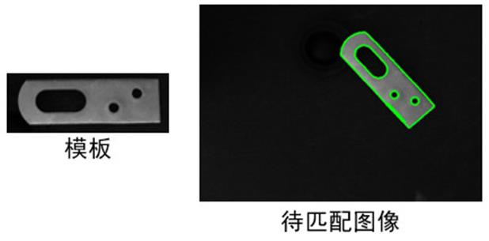

|
类型 |
形状模板匹配 | ||||||||||||
|
描述 |
使用单形状模板，在图像img上进行匹配查找 根据模板类型及扩展算法参数，可以支持扩展算法 | ||||||||||||
|
语法 |
ZV_McFindShape(model,img,matchs,minScore[,nums=0,maxOverlap=0.5,minThresh=-1,accuracy=1,speed=9,polar=0,deform=0,boundary=4])
参数： model：ZVOBJECT类型，形状模板 img：ZVOBJECT类型，待匹配的搜索图像，8U单通道，尺寸必须大于模板图片 matchs：ZVOBJECT类型，输出参数，匹配结果，矩阵，n行5列或7列（杂波功能开启），每行一个匹配目标，列依次为匹配分数score、x坐标、y坐标、旋转角度angle、缩放比例scale（、模板序号0、杂波分数） minScore：最小匹配分值，(0,100]，分值越高匹配的目标越准确，越低容易将非目标当成目标 nums：最大匹配数量，[0, 无穷)，当num大于真实目标时，以目标分数从高到低输出所有目标；当num小于真实目标时，以目标分数从高到低输出num个目标；当num为0时，以目标分数从高到低输出所有目标 maxOverlap：目标重叠率，正常范围[0,1]，0--不重叠，表示只找不重叠的目标，1-重叠，表示相隔很近的目标都能找到。重叠率表示目标允许的重叠比例。重叠率是目标轮廓特征的最小外接矩重叠面积除以最小外接矩的面积计算得来。当匹配结果重叠比例超出设置值时将只保留最好的结果，主要用于去除重叠的目标对象，当搜索图中只有一个目标时也可将参数设置小一些，会加快匹配速度但不明显 minThresh：目标轮廓的最低边缘阈值，minThresh取-1时将使用模板图像估算出的最小阈值。如果模板图像和匹配图像差异大可能导致匹配失败，这时应该自己设置阈值，比如设置成0 accuracy：匹配精度，0-像素精度，1-插值精度，2-最小二乘拟合精度，3-多次迭代的最小二乘拟合精度。精度1能满足大部分应用，在精度要求较高的场合使用2或3，但也会更耗时 speed：匹配速度0-10，越大速度越快，但可能丢失目标，大于10时取10，如果有丢失目标则建议设置小些 polar：匹配极性
deform：变形尺寸，相对于模板，允许目标轮廓有少许变形，0-不支持变形；1-支持略微变形，但更耗时,可结合匹配阈值去掉一些噪声干扰提高速度 boundary：边界模式，目标轮廓超出图像边界的程度，0-不超出，1-少量超出，2-超出适中，3-大量超出，4-完全超出，匹配耗时依次增大。使用边界时需要结合系统参数"ShapeOnBorder"使用，只有这个参数设置为1时，边界模式才会起作用，建议根据实际情况设置该值 | ||||||||||||
|
适用控制器 |
支持ZV功能或者5系列以上的控制器 | ||||||||||||
|
例子 |
 ' 该段代码与ZV_McCreateShape案例一致 ZVOBJECT model_img,re,model ZV_ImgRead(model_img,"model1.jpg",0) ' 读取模版图像 ZV_ReGenFullImage(model_img,re) '创建全图区域 ZV_McCreateShape(model_img,re,model,-180,360,0,0,0,0) '创建模板
ZVOBJECT match_img,result_mat ZV_ImgRead(match_img,"match_img1.png",0) '匹配图像 ZV_McFindShape(model,match_img,result_mat,90,1,0.6,-1,3,9,0) '模板匹配 ?"匹配到的目标个数为：",ZV_MatRows(result_mat) | ||||||||||||
|
相关指令 |